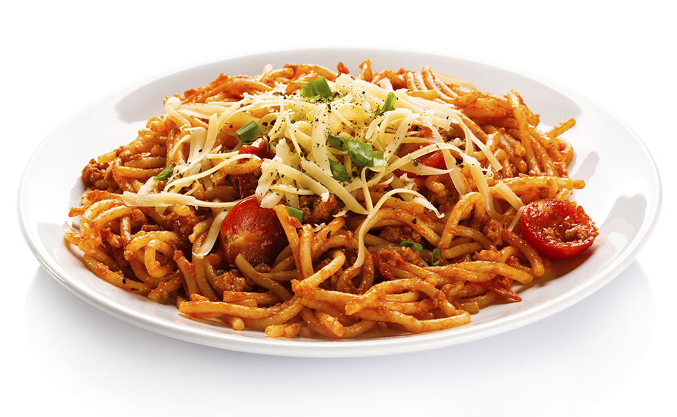

Home
Pasta

- Place the ground meats, both bread crumbs, parsley, Parmesan, salt, pepper, nutmeg, egg, and 3/4 cup warm water in a bowl. Combine very lightly with a fork. Using your hands, lightly form the mixture into 2-inch meatballs. You will have 14 to 16 meatballs.
- Pour equal amounts of vegetable oil and olive oil into a large (12-inch) skillet to a depth of 1/4-inch. Heat the oil. Very carefully, in batches, place the meatballs in the oil and brown them well on all sides over medium-low heat, turning carefully with a spatula or a fork. This should take about 10 minutes for each batch. Don't crowd the meatballs. Remove the meatballs to a plate covered with paper towels. Discard the oil but don't clean the pan.
- For the sauce, heat the olive oil in the same pan. Add the onion and saute over medium heat until translucent, 5 to 10 minutes. Add the garlic and cook for 1 more
minute. Add the wine and cook on high heat, scraping up all the brown bits in the pan, until almost all the liquid evaporates, about 3 minutes. Stir in the tomatoes, parsley, salt, and pepper.
- Return the meatballs to the sauce, cover, and simmer on the lowest heat for 25 to 30 minutes, until the meatballs are cooked through. Serve hot on cooked spaghetti and pass the grated Parmesan.